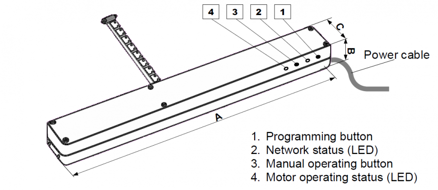

FAK_ZWS12
Firmware Version : 3.10 |
 |
Quick StartA This is a Z-Wave actuator. Inclusion and Exclusion are confirmed by a single click on the programming button. If the Fakro Chain Drive is not included into any Z-Wave network, the LED is on continually. Please refer to the chapters below for detailed information about all aspects of the products usage. |
Product description
The ZWS12 chain motor is thanks to its small dimensions and suitable force output ideal for roof window operating and is fully compatible with the Z-Wave system. The motor can be used to upgrade centre pivot and top hung and pivot roof windows of different manufacturers.
The maximum chain reach of the ZW12 is 24cm. The motor is equipped with built-in overload protection which acts as a sensor for correct window closing.
Installation Guidelines
The Chain Drive for Pivot Windows (12V) is intended for operating centre pivot and top hung and pivot roof windows. The ZWS motors are equipped with a twoway "Z-Wave" communication radio module. ZWS motors are Security Enabled products. Security Enabled Z-Wave Controller must be used in order to fully utilize ZWS. The motor functionality is anyway identical when included as a secure and non-secure device.
The ZWS motors are equipped with two limits:
- limit switch at maximum chain travel position
- overload limit at folded chain position
Install the ZWS motor with your roof window according to the picture installation manual within the link.
Please read carefully the instructions below before proceeding to the device installation so as to prevent electric shock or injury. When installing the mechanical motor, it is necessary to observe the following recommendations:
- Above all, follow the safety rules. The use of electric motors for roof window operating is connected with a risk of injury. Although, the motor is equipped with an overload switch, the forces which operate here are strong enough to cause injury.
- If the window equipped with an electric motor is easily accessible, e.g. the lower window edge is situated lower than 2.50m above the floor level, then special safety measures should be adopted so as to prevent health hazards.
- After unpacking, check the motor elements for any signs of mechanical damage.
- Installation should be performed by a qualified person in accordance with manufacturer instructions.
- Before connecting the motor, make sure that the right power adapter is installed (12V DC, min. 12 Watt, 2-pin cable).
- Connect the motor and verify its correct functioning by performing one full working cycle without any load (two-core cable - 12V DC motor, three-core cable - 230V AC). Leave the chain protruding by approximately 5cm.
- Plastic containers used for packing should be stored out of children reach as they may be a potential source of danger.
- The motor should be used according to its intended design. The FAKRO Company shall not be responsible for any consequences being the result of improper motor use.
- Any activities relating to cleaning, adjustment or dismantling the motor should be preceded with disconnecting the power supply.
- The motor cannot be washed using solvent-based substances or open stream of water (do not immerse in water).
- Any repairs of the motor should be carried out by authorised service by the manufacturer.
- Electric wires supplying electricity to the power source must have suitable area (2x1mm2). Permissible cable length for the mentions area is 30m.
- The motor has been designed for installation inside the room.
- The motor cannot be used as a mechanism for operating the sashes of smoke ventilation windows.
WARNING!!! Danger of crashing. While closing, the motor exerts the force of 250N (app. 25kg).
Behavior within the Z-Wave network
I On factory default the device does not belong to any Z-Wave network. The device needs to join an existing wireless network to communicate with the devices of this network. This process is called Inclusion. Devices can also leave a network. This process is called Exclusion. Both processes are initiated by the primary controller of the Z-Wave network. This controller will be turned into exclusion respective inclusion mode. Please refer to your primary controllers manual on how to turn your controller into inclusion or exclusion mode. Only if the primary controller is in inclusion or exclusion mode, this device can join or leave the network. Leaving the network - i.e. being excluded - sets the device back to factory default.
If the device already belongs to a network, follow the exclusion process before including it in your network. Otherwise inclusion of this device will fail. If the controller being included was a primary controller, it has to be reset first.
Make sure that your Z-Wave Controller is in the Inclusion-/Exclusion-Mode. Click the programming button one time to confirm the process.
Operating the device
To be able to operate the ZWS12 motor by means with a Z-Wave controller it is necessary to:
- 1. Ad the device (using "INCLUDE" function) to the selected Controller.
- 2. Associate the device with the selected pair of buttons on the Controller (using "ASSOCIATE" function).

There are different modes in which the device can be used:
"PROTECTION" - used to protect a device against unintentionally control by e.g. a child. Three levels can be set by any controller supporting this functionality.
Note: The description for activation and deactivation of the protection function is described in the user manual of the controllers supporting this function.
"RETURN ROUTE ASSIGNING" - depending on version actuator can be equipped with rain sensor input. In such case it is possible to link this actuator with other actuators which have not rain sensor functionality. In this case it is necessary to initiate "ASSIGN" function by Controller. Standard procedure which can vary for different controllers is:
Start "ASSIGN" function - press (1 sec) programming button on actuator without rain sensor - press (1 sec) programming button on actuator with rain sensor.
Note: For information on handling or initiation the assign function of products of another manufacturers, please read the documents of the respective manufacturer.
"All ON or All OFF" - it is possible to define if device should respect All close (OFF) or All Open (ON) command.
Note: The description for activation and deactivation of the protection function is described in the user manual of the controllers supporting this function.
"SECURITY" ZWS motors are Security Enabled products. The security provides confidential communication between nodes in network.
Note: Security Enabled Z-Wave Controller must be used in order to fully utilize ZWS.
"MANUAL OPERATING" The "Manual operating" button makes it possible to operate the motor right after connecting the power supply. Manual operating works in sequential mode, i.e. start, stop, start in opposite direction, stop - etc.
Note: Watch the LED showing the status of devices on the network. Blinking LED indicates the status of protection state and may mean that the control of the device is not possible.
Node Information Frame
NI The Node Information Frame is the business card of a Z-Wave device. It contains information about the device type and the technical capabilities. The inclusion and exclusion of the device is confirmed by sending out a Node Information Frame. Beside this it may be needed for certain network operations to send out a Node Information Frame.
A sinlge click on programming button sends a Node Information Frame.
Associations
A Z-Wave devices control other Z-Wave devices. The relationship between one device controlling another device is called association. In order to control a different device, the controlling device needs to maintain a list of devices that will receive controlling commands. These lists are called association groups and they are always related to certain events (e.g. button pressed, sensor triggers, ...). In case the event happens all devices stored in the respective association group will receive a common wireless command.
Association Groups:
| 1 | Basic notification group (max. nodes in group: 5) |
Set and unset associations to actuators
Associations can be assigned and remove either via Z-Wave commands or using the device itself.
SAMake sure that your Z-Wave Controller is in the Association-Mode. Click the programming button one time to confirm the process.
Technical Data
| Explorer Frame Support | Yes |
| SDK | 4.51 |
| Device Type | Slave with routing capabilities |
| Generic Device Class | Multilevel Switch |
| Specific Device Class | Motor Control Class B |
| Routing | Yes |
| FLiRS | No |
| Firmware Version | 3.10 |